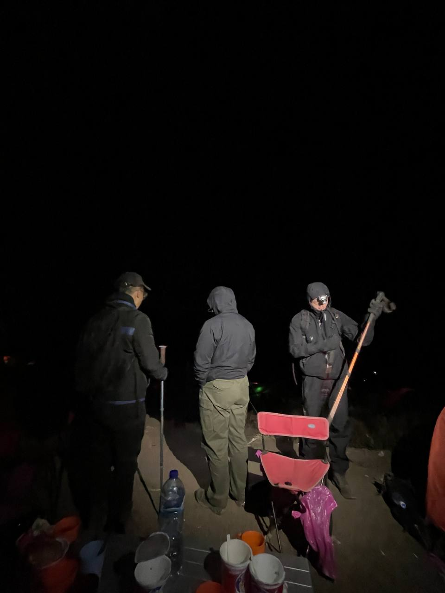
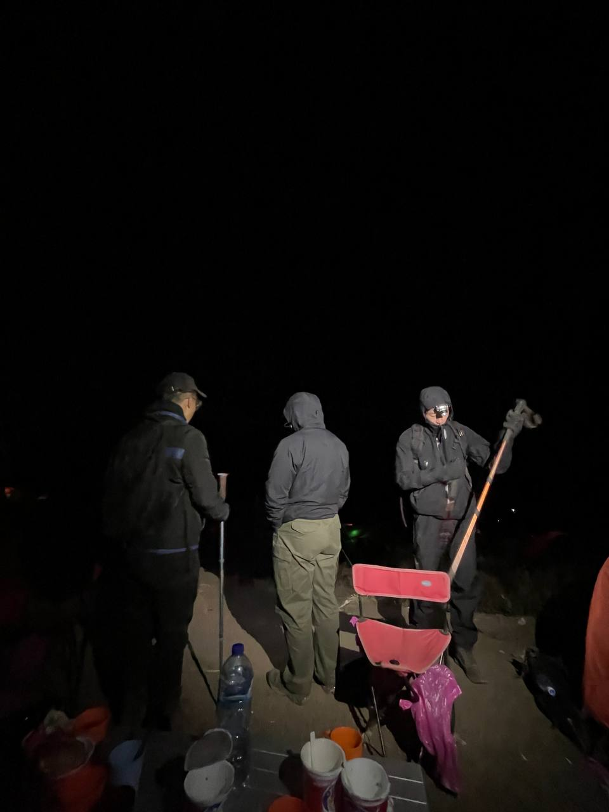
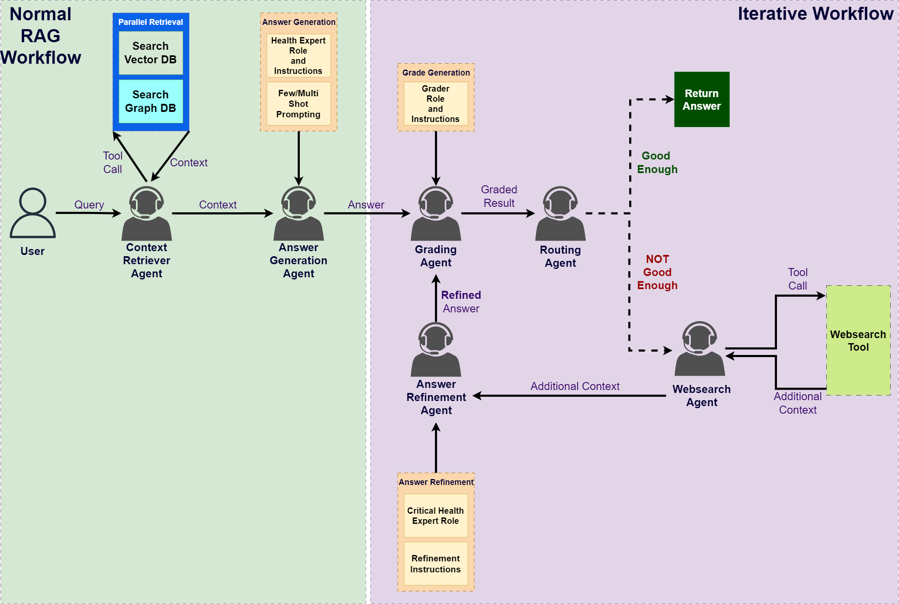

Agent-Visualiser
Born from the challenge of debugging complex multi-agent systems myself, I built this tool to make visualizing their interactions and behaviors more intuitive-(hopefully) helping developers like me along the way